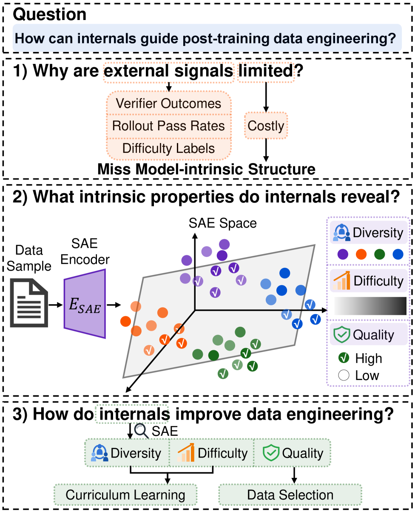
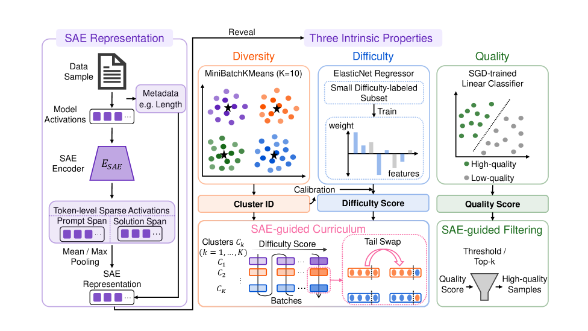
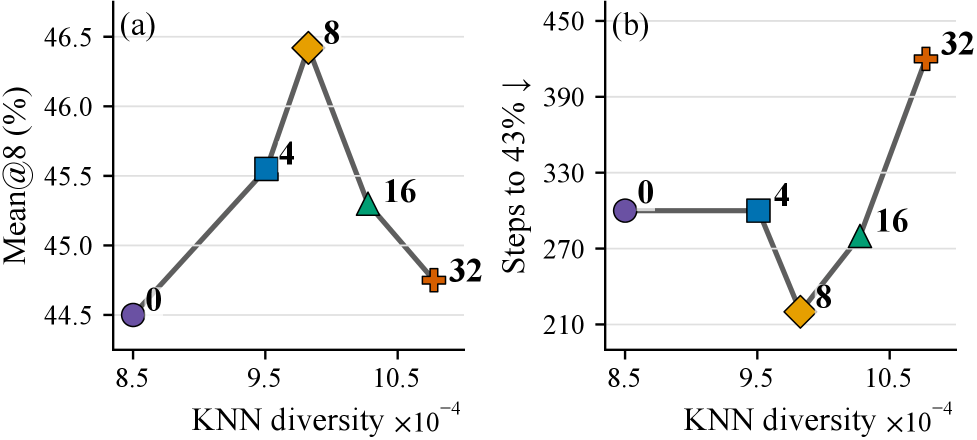

SAERL demonstrates that sparse autoencoder activations can model data diversity, difficulty, and quality to guide RL post-training data engineering, yielding consistent accuracy gains and training efficiency improvements.
本文提出SAERL方法，利用稀疏自编码器（SAE）的激活值来建模数据的多样性、难度和质量，从而指导强化学习后训练中的数据工程。实验表明，该方法在Qwen2.5-Math-1.5B上相比原始GRPO平均准确率提升3.00%，并减少20%的训练步数，且SAE信号可跨模型族和规模迁移。
Deep Note — saerl
Key Takeaways - SAE activations encode three intrinsic data properties: diversity, difficulty, and quality. - SAERL improves average accuracy by 3.00% over vanilla GRPO on Qwen2.5-Math-1.5B. - SAERL reaches target accuracy with 20% fewer training steps. - SAE-based signals transfer effectively across model families and scales. - Model internals are a practical source of signals for post-training data engineering.
0) Metadata
- Title: Guiding LLM Post-training Data Engineering with Model Internals from Sparse Autoencoders
- Alias: saerl
- Authors: Yi Jing, Zao Dai, Jinwu Hu, Zijun Yao, Lei Hou, Juanzi Li, Xiaozhi Wang
- arXiv ID: 2605.27354
- Published:
- Links:
- Abs: https://arxiv.org/abs/2605.27354
- HTML: https://arxiv.org/html/2605.27354v1
- PDF: https://arxiv.org/pdf/2605.27354
- Tags: sparse-autoencoder, data-engineering, reinforcement-learning, mechanistic-interpretability, post-training
- Domains: ai_safety, system_safety
- Rating: 4/5 (base 1 + quality 2 + observation 1)
1) Why-read
SAERL demonstrates that sparse autoencoder activations can model data diversity, difficulty, and quality to guide RL post-training data engineering, yielding consistent accuracy gains and training efficiency improvements.
2) CRGP
C — Context
Post-training data engineering for LLMs typically relies on external signals like human preferences or verifier outcomes, which are costly and ignore intrinsic model signals. Sparse autoencoders (SAEs) have emerged as a mechanistic interpretability tool that decomposes hidden representations into sparse, fine-grained features, offering a new lens for data engineering.
R — Related work
- Existing post-training data engineering uses external signals (human preferences, verifier outcomes, rollout pass rates, difficulty signals).
- Internal representations have been used for data selection in pre-training and supervised fine-tuning.
- Sparse autoencoders (SAEs) decompose LLM hidden representations into sparse feature activations for interpretability.
- Pioneering work (Wang et al., 2025a) uses LLM hidden representations for RL data selection.
G — Gap
Post-training data engineering for RL largely relies on external feedback signals, ignoring the rich intrinsic signals encoded in model internals. It remains unclear whether model internals, especially fine-grained SAE features, can effectively guide data diversity, difficulty, and quality for RL post-training.
P — Proposal
SAERL uses SAE activations to model three intrinsic data properties: diversity (via SAE-space clustering and batch mixing), difficulty (via a proxy for easy-to-hard curriculum ordering), and quality (via a probe for data filtering). These properties ground concrete data engineering operations that improve both performance and training efficiency.
---
4) Experiments
Main results
On Qwen2.5-Math-1.5B, SAERL improves average accuracy by 3.00% over vanilla GRPO and reaches target accuracy with 20% fewer training steps. Gains are consistent across model scales and RL algorithms.
Ablation
Each component (batching strategy, curriculum ordering, data filtering) contributes to the final results; the full SAERL framework outperforms any single component.
Limitations
['The study focuses on mathematical reasoning; generalizability to other domains is not verified.', 'SAE training and inference add computational overhead.', 'The quality probe relies on PRM800K labels, which may not be available for all tasks.']
5) Why it matters
- Provides a principled way to leverage mechanistic interpretability for practical data engineering.
- Demonstrates that model internals can be a lightweight, reusable signal across model families.
- Opens a new direction for intrinsic data engineering in LLM post-training.
6) Next steps
- [ ] Apply SAERL to other domains (e.g., code generation, instruction following).
- [ ] Explore online adaptation of SAE-based signals during training.
- [ ] Investigate combining SAE signals with external feedback for hybrid data engineering.
- [ ] Scale SAERL to larger models and more complex RL algorithms.
7) Scoring
4/5 = base 1 + quality 2 + observation 1
利用稀疏自编码器的模型内部状态指导大语言模型后训练数据工程
主要结论 - SAE激活值编码了数据的三种内在属性：多样性、难度和质量。 - SAERL在Qwen2.5-Math-1.5B上相比原始GRPO平均准确率提升3.00%。 - SAERL达到目标准确率所需的训练步数减少20%。 - 基于SAE的信号可有效跨模型族和规模迁移。 - 模型内部状态是后训练数据工程的实用信号来源。
1) 阅读理由
SAERL证明稀疏自编码器激活值可以建模数据多样性、难度和质量，从而指导强化学习后训练数据工程，带来一致的准确率提升和训练效率改进。
2) CRGP（背景 / 相关工作 / 差距 / 方案）
上下文：大语言模型的后训练数据工程通常依赖外部信号（如人类偏好或验证器结果），这些信号成本高昂且忽略了模型内在信号。稀疏自编码器（SAE）作为一种机制可解释性工具，将隐藏表示分解为稀疏的细粒度特征，为数据工程提供了新视角。相关工作：现有后训练数据工程使用外部信号（人类偏好、验证器结果、轨迹通过率、难度信号）；内部表示已被用于预训练和监督微调中的数据选择；SAE将LLM隐藏表示分解为稀疏特征激活用于可解释性；先驱工作（Wang et al., 2025a）使用LLM隐藏表示进行强化学习数据选择。差距：强化学习的后训练数据工程主要依赖外部反馈信号，忽略了模型内部编码的丰富内在信号。目前尚不清楚模型内部状态（尤其是细粒度SAE特征）能否有效指导强化学习后训练中的数据多样性、难度和质量。提案：SAERL使用SAE激活值建模三种内在数据属性：多样性（通过SAE空间聚类和批次混合）、难度（通过从易到难课程排序的代理指标）和质量（通过数据过滤的探针）。这些属性支撑了具体的工程操作，同时提升了性能和训练效率。
3) 实验
在Qwen2.5-Math-1.5B上，SAERL相比原始GRPO平均准确率提升3.00%，达到目标准确率所需的训练步数减少20%。增益在不同模型规模和强化学习算法上保持一致。
消融实验
每个组件（批次策略、课程排序、数据过滤）都对最终结果有贡献；完整的SAERL框架优于任何单一组件。
局限性
['研究聚焦于数学推理，未验证在其他领域的泛化性。', 'SAE训练和推理增加了计算开销。', '质量探针依赖PRM800K标签，并非所有任务都可用。']
4) 重要性
- 提供了一种利用机制可解释性进行实用数据工程的原则性方法。
- 证明模型内部状态可以成为跨模型族的轻量级、可复用信号。
- 为LLM后训练中的内在数据工程开辟了新方向。
5) 下一步
- [ ] 将SAERL应用于其他领域（如代码生成、指令遵循）。
- [ ] 探索训练过程中基于SAE信号的在线自适应。
- [ ] 研究将SAE信号与外部反馈结合用于混合数据工程。
- [ ] 将SAERL扩展到更大模型和更复杂的强化学习算法。


